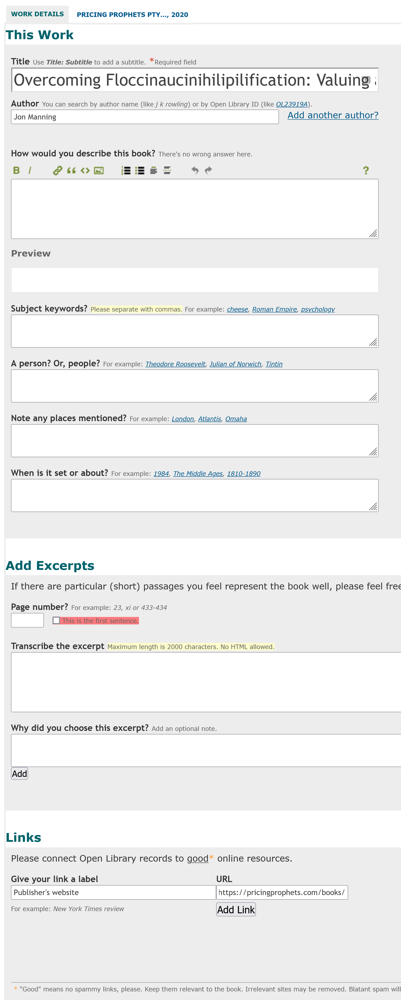
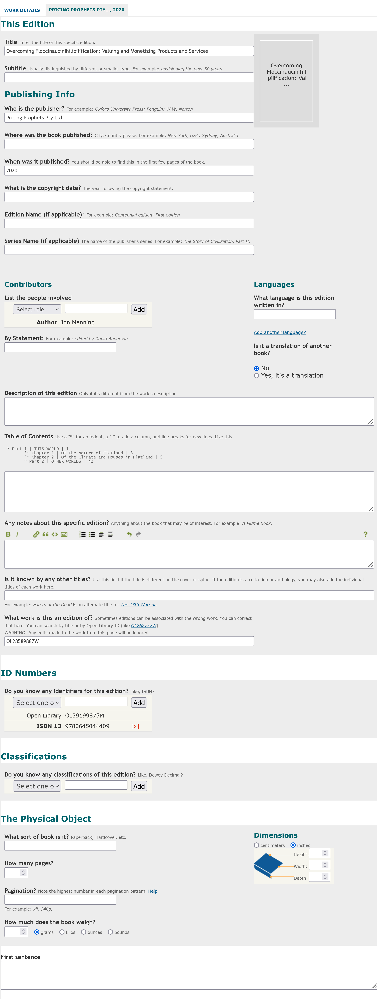
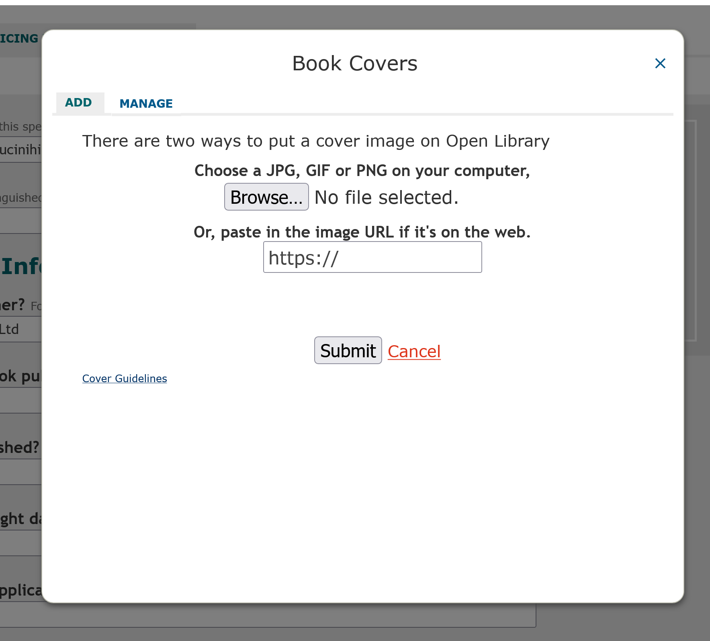

Adding a Book to Open Library
I’ve been looking at Open Library as a knowledge base for books. A lot of the data here is manually uploaded by people, and the user interface has a big impact on the data they enter. To understand the data better I wanted to actually go through the process of adding a book, Overcoming Floccinaucinihilipilification by Jon Manning, and this article documents the process.
Overall Open Library prioritises making it easy for people to add data, and then has facilities to edit it. There are few required fields, most fields are free text, and there is minimal validation. This is really helpful in getting lots of books in the system, at the cost of duplication and sparse and erroneous data. For their goal of getting a web page for every book this is the right approach, but it has implications for the resulting data.
To add a book requires minimal data; the title, author, publisher and optionally an identifier like an ISBN. After adding a book there’s a prompt to encourage for additional details like a description and subject keywords. Then the work can be edited to add additional details such as a cover, other identifiers, and language. The author can also be edited to add a biography, birth and death date, and other identifiers.
Adding a Work
Open Library is publicly editable, you just need to create an account linked to an email address and log in. Adding a book easy; you just need to supply the title, author, publisher, when published and optionally an ID (an ISBN10, ISBN13, LCCN). The title is free text, the author field provides an autocomplete drop down of existing authors, and the publisher and published date is free text. There seems to be minimal validation, which helps get data into the system but allows incorrect data and duplicates. There doesn’t seem to be any indication of whether the title is already in the database, which explains why there are often duplicates. The title is parsed as Title: Subtitle, which is convenient but also can lead to certain kinds of errors. The author field by default creates a new author, which explains all the duplicate authors, and doesn’t prompt for any information about the author. The publisher and published date are free text, and I’ve seen many small variations in actual usage (there is a nudge “Are you sure that’s the published date?” if there’s nothing that looks like a year in the date). The ID field is an optional drop down; I’m not sure whether this is validated but encourages adding just one ID (which is why there’s often an ISBN10 or ISBN13 but not both).
Adding Work details
After you submit this page (and the CAPTCHA) the book is added, and you’re sent to a new screen and encouraged to add more details.

A lot of the fields here are very open ended. For the “How would you describe the book?” field there is explanatory text saying “There’s no wrong answer here.”. I found it really hard to describe the book, so I put the blurb.
Then there were fields for subject keywords, people, places, and times. In this case only keywords seemed appropriate, and it’s hard to think of some (the example text suggests: cheese, Roman Empire, psychology). I picked pricing,business,microeconomics but I could think of many variations; these are unlikely to be consistent.
There’s also an option to add excerpts or the first sentence, but I couldn’t find one I thought was worth adding. Finally there’s a link section, giving an example of “New York Times review”; I added the publisher’s website.
However after doing this the book data is still very sparse. If you view the work and click “Edit” you get many more options.
Editing Edition Details

The first thing to note is that in the add book page it said to use “Title: Subtitle”, but in the edit page they are separate fields! Most of the fields are free text, but the “Languages” field has an auto-suggest dropdown (where I could select “English”). The ID field has a large dropdown list of catalogues you can link with, but above the --- are ISBN 10, ISBN 13, LC Control Number, OCLC/World Cat, Goodreads, and Library Thing. There is some validation around fields like dimensions need to be numbers. I didn’t immediately realise I could change the cover here until I accidentally moused over the grey cover and saw a tooltip saying “Add cover image”. Clicking here opens a popup to add a book cover.

It’s nice that you can add either a file or a URL; I added a cover URL and it worked well. This automatically populated the cover image for the work.
I couldn’t see how to edit things like the subject keywords that were added after adding the work.
Adding Edition
I also tried adding a new edition for the digital version. The add book page is largely similar, with the title and author pre-filled but modifiable (and authors can be added). The publisher and publish date need to be added, along with IDs.
After adding the edition there is a detail page similar to when we added the book originally. All the fields are emptied, including things such as subtitle which are likely to be stable across editions. This means the data is often going to be missing or inconsistent across editions.
Interfaces for Data Collection
Adding two editions of Overcoming Floccinaucinihilipilification by Jon Manning to Open Library was easy. However I had to carefully explore the interface to fill in a lot of detailed data, many works will be missing data. The lack of checks and prompts mean that there will be duplication and inconsistencies, especially around subtitle which was inconsistently handled throughout the interface. However the most important data, the title and author and linking id are often clearly captured.
From Open Library’s perspective a lot of these design decisions are good; it should be as easy as possible to add a book. There are opportunities to make certain fields more accessible, improve the consistency of capturing subtitle, and pre-fill. But from the perspective of a data consumer it means we expect very high coverage, but need to be tolerant to duplicates, inconsistencies, and errors.